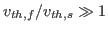

Contrary to predictions of radiation-hydrodynamics design codes, the National Ignition Facility has not succeeded in achieving ignition. Recent experimental evidence suggests that plasma kinetic effects may play an important role during Inertial Confinement Fusion (ICF) capsules’ implosion. Consequently, kinetic models and simulations may need to be used to better understand experimental results and design ICF targets. We present a new, optimal, fully implicit, and fully conservative 1D2V Vlasov-Fokker-Planck (VFP) code, iFP, which simulates ICF implosions kinetically. Such simulations are difficult to perform because of the disparate time and length scales involved. The challenge in obtaining a credible solution is further complicated by the need to enforce discrete conservation properties.
In our studies, we employ the Rosenbluth formulation for the Fokker-Planck collision operator. Our approach uses a fully implicit temporal advance to step over stiff collision-time scales. For the solver, we use a Jacobian-free Newton-Krylov method with an optimal multigrid-based preconditioning technology. To address the issues of velocity disparity between various species as well as those associated with temporal and spatial temperature variations, we have developed: 1) a velocity space meshing scheme, which adapts to the species’ local thermal velocity; and 2) an asymptotic expansion of the Rosenbluth potentials based on the large ratio of thermal speeds of the fast-to-slow species (

). We have also implemented a Lagrangian mesh, which allows the physical space mesh to move as the capsule compresses. Finally, we enforce discrete conservation of mass, momentum, and energy by solving a set of discrete nonlinear constraints, which are derived from continuum symmetries present in the VFP equations. Herein, we present some results testing the code capabilities and show preliminary simulations of a plasma shock.